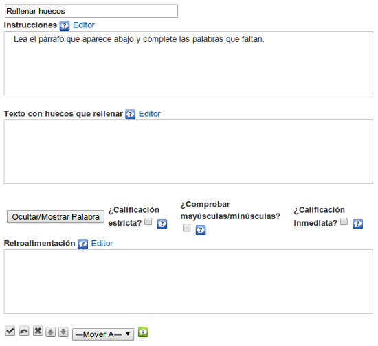

Rellenar huecos
Utilizaremos este iDevice para proponer al alumno un texto con espacios en blanco que deberán ser completados. Incluye la posibilidad de retroalimentación.
Dispondremos de varias opciones de corrección:
- Flexibilidad en la respuesta: admite como buenas las respuestas que sólo se diferencien en una letra.
- Admitir error de la primera mayúscula: considera correcta la palabra aunque la primera letra (mayúscula/minúscula) no sea corecta.
- Corrección inmediata: corrige al completar la palabra sin esperar a que el usuario lo solicite.
Al seleccionar el iDevice "Rellenar huecos" del listado de iDevices se nos mostrará lo siguiente en nuestro eXeLearning:

En la parte superior tendremos la posibilidad de modificar el título del iDevice.
En el apartado "Instrucciones" escribiremos el texto con las instrucciones para realizar la actividad.
En el apartado "Texto con huecos a rellenar" escribiremos el texto sobre el que se creará la actividad, seleccionando la palabra o palabras que queremos hacer desaparecer haciendo clic en el botón "Ocultar / mostrar palabra".
Tendremos la posibilidad de marcar diferentes opciones de corrección.
Por último en el apartado "Retroalimentación", incluimos aquellas informaciones e indicaciones que puedan servir de ayuda o complemento a nuestro alumno para realizar la actividad propuesta.
¿Sabías que?
Podemos crear un hueco en el que varias palabras sean candidatas a la palabra correcta.
Para ello tendremos que escribirlas entre líneas verticales: |casa|apartamento|chalet| y seleccionando la cadena, pulsar el botón de mostrar/ocultar.
Ejemplo de Rellenar huecos: Cuadrado mágico chino
Rellena el cuadrado mágico chino, que consiste en colocar los números del 1 al 9, sin repetir ninguno y de tal forma que tanto las filas, las columnas y las dos diagonales sumen lo mismo. Rellena los huecos que faltan en la frase.
Practica eXe: crear una actividad de rellenar huecos
Realiza los siguientes procedimientos:
- Abre el archivo miarchivo2.elp que has creado en la actividad anterior (Puedes hacer doble clic sobre él).
- Crea un iDevice "Rellenar huecos" en el nodo "Preguntas". Modifica el título.
- Crea un texto en el que al menos ocultes dos palabras o cadenas.
- Una vez terminado, haz clic en el botón
 para ver el resultado.
para ver el resultado. - Guarda los cambios. (Archivo > Guardar)
Si tienes alguna duda puedes consultar el siguiente vídeo:
eXeLearning. iDevice actividad de rellenar huecos. (CC by)
Obra publicada con Licencia Creative Commons Reconocimiento Compartir igual 4.0